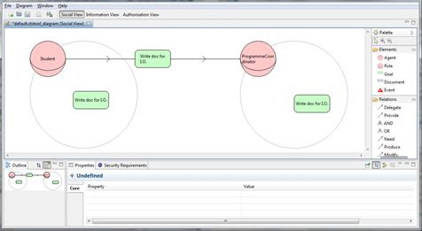
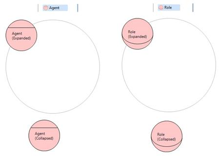
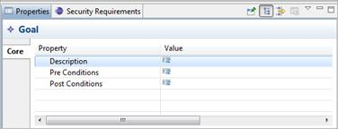
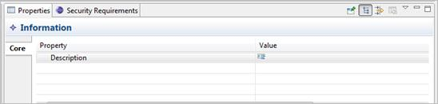
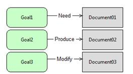
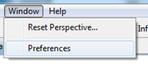

1. Introduction
The Socio-Technical Security Modelling Tool (STS-Tool) is a standalone application written in java and based on the Eclipse Rich Client Platform (RCP) Engine. It is distributed as a compressed archive for multiple platforms and it is free to download from the STS-Tool web site[1]. The website includes the source code of the tool, released under the APGL (Affere General Public License) open source software license. STS-Tool requires the installation of a Java Virtual Machine[2] version 6.26 or above. Previous versions of the tool (1.0.4, 1.0.5, 1.1.0, 1.1.1 and 1.2.0) are also available online[3].
As a first step, extract the content of the archive, which contains the tool binaries, to a folder on your PC (or MAC). Then, run the launcher file (StsTool) - no setup is needed. A splash screen with the tool logo and the tool version appears in the middle of your screen indicating that the program is loading (Figure 1).
Figure 1: STS-Tool loading
Then, you will be asked to read and accept the terms of use. Read it carefully, select the check box on the bottom and click the button “I Agree”. The tool will show you a welcome page, with useful information and a change log describing differences from previous versions (Figure 2: STS-Tool welcome page). By clicking the button “Decline”, you will close the program.
Figure 2: STS-Tool welcome page
2. GUI Overview
This section presents the Graphical User Interface (GUI) of the STS-Tool, and shows how to specify security requirements. The modeling language is described extensively in the STS-Tool Modeling Language document[4].
2.1 Creating a new diagram
To create a new diagram, click the “File” menu and then “New Diagram” (Figure 3). A wizard will ask you to enter a new file name (a default name will appear), then press “Finish” (Figure 4).
Figure 3: Creating a new diagram
Figure 4: Naming a new diagram
2.2 Work environment overview
shows how the STS-Tool looks like when a new diagram is created. The work environment is horizontally split into three areas.
- The upper area contains the Menu Bar and the Toolbar;
- The middle area or the drawing area contains the Canvas and the Palette;
- The lower area contains the Outline Tab and the Property Tab.
The name of the tool and its version are shown in the topmost application bar (Figure 5). Below, you can find a Menu Bar, with different entry divided by functionality:
- File: manipulating (e.g., saving and loading) STS-Tool files on storage devices;
- Edit: modify the current diagram;
- Window: change and customize the program appearance;
- Help.
Figure 5: STS-Tool overview
Under the Menu Bar you can find the Toolbar, which enables quick access to common functionalities: such as save, undo, redo, export and switch to different views (Social [default], Information and Authorisation).
Figure 6: Buttons to select a different view
In the drawing area, you can model your scenario using the Diagram editors. The STS-Tool supports multiple editors, so to model or open different diagram at the same time. For each diagram a new Editor Tab is added. Each editor is composed by a Canvas Area and a Palette.
The first area (Palette), on the right, enables quick access to common component (i.e., elements and relations between them). The palette contains different tools that provide specific functionalities to support the analyst (tools are also grouped).
In the first group there are the standard tools, used to select, zoom and add notes (Figure 7).

Figure 7: Palette area, standard tools
The second group contains the tool used to create elements (Figure 8).
Figure 8: Palette area, drawing elements
The third group contains the tool used to create relations between elements (Figure 9).
Figure 9: Palette area, relations
A more detailed description of Elements and relations is provided in the next paragraphs.
The main part of the tool is dedicated the diagram Canvas, where diagrams are shown. Under the editor area you can find the Outline Tab and the Property Tab. The Property Tab enables adding descriptions and setting properties for elements and relationships in a diagram. The Outline Tab is used to navigate trough the diagram in zooming mode.
3. Modeling a scenario
In this section, we describe how to carry out modeling with the STS-Tool. In particular, we show how to add elements and relations and how to set their properties.
3.1 Adding Elements
To add a new element, please follow the following four steps (Figure 10):
- Select an element from the palette area with the mouse (Elements group); just click on the element;
- Move the mouse cursor over the diagram canvas (the cursor will change its icon);
- Click with the left mouse button on the point where you want to add your element;
- The new element is added and you are asked to insert a new name. Afterwards you can press “enter” or click outside the element to automatically return to the “Selection tool”. (Note: the name must be unique among all elements of the same type).

Figure 10: Assigning a name to an element
To rename an element you can simply select the element with a click or double click (be sure to have the selection tool active) and type a new name, or press “F2” to edit the current name.
Note 1: While creating elements you can press the “Ctrl” (“apple” on Macintosh) button to create a sequence of elements, without having to select the “Element creation tool” every time.
Note 2: As you will see later, not all elements can be created on the canvas. Look at the section “Elements and Relations descriptions” which has a detailed description of every element.
3.2 Adding Relations
A relation is a link between two elements, so to create it you must have at least two different elements to relate. Follow these steps to create a new Relation:
- Select with the mouse a relation from the palette area (Relations group); just click on the element;
- Move the mouse cursor over the first element (source);
- Click with the mouse, and keeping the button pressed, drag to the second element (target);
- Release the mouse button when over the target.
The relation is now created (Figure 11).
Figure 11: Steps to create a relation
Use the Property Tab to add a description of the relation properties (when adding a delegation, for instance, the properties view is used to define the delegated goal).
Note: Each relation has its own creation constraint. Look at the section “Elements and Relations descriptions” for more details.
A more complex case occurs when you create a relation of provision or delegation. To do this:
- Select a relation from the palette area with the mouse (Relations group); just click on the element;
- Move the mouse cursor over the first element (source) goal or information;
- Click with mouse, and keeping the button pressed, drag to the second element (target) agent or role (see Figure 12-a);
- Release the mouse button when over the target (see Figure 12-b for the created relation).
(a)

(b)
Figure 12: Steps for adding a delegation / provision
3.3 Setting properties
Once an element or a relation is created, the tool assigns default values to its properties. To change the value of a property, use the Property Tab (Figure 13).
Figure 13: Property details
Elements and relations also have different inner properties, which can be viewed and edited using the Property Tab. To enable this, select the element or the relation in the diagram.
The “Property Tab” is a table with two columns. The first column displays the name of the property of that element, and the second shows the value of that property. First select in the diagram the element you want to modify, and then go to the property tab. In Figure 13, you can see how the “Property Tab” looks for a “Role”. In the upper corner, you can see the name of the type of the selected element. Clicking on a value cell of a specific property, you can input the new value for the property. The type of the editor can be different based on the type of the property. Look at the section “Elements and Relations descriptions” for more details about properties.
3.4 Views
Views permit various aspects of a model to be separated to simplify the modeling activity. Each view has an independent layout, meaning that the position of elements and their size are view-dependent. To switch from one view to another, just use the toolbar buttons (
Figure 14). The default view when you create a new diagram is the social view. When switching to a different view, the content of the canvas changes, by hiding/showing the elements and relations available in such a view. Similarly, each view has a specific palette that enables elements/relations related to the current view to be added.
Figure 14: View switching palette
3.5 Frequent operations (delete, moving and renaming)
Element deletion can be done in two different ways, either by keyboard or mouse:
- Keyboard: select the element/relations you want to delete and press button “Del”;
- Mouse: select the element/relations, “right-click” and select “Delete” from the menu (Figure 15).
Figure 15: Deleting an element/relationship
Warning: not all elements can be removed, to avoid cascade deletions. However, the STS-Tool supports users by introducing pop-ups to warn about this. As an example consider the deletion of a delegated goal / provided document. The goal/document that automatically appears in the delegatee actor scope cannot be deleted. To delete it, the associated delegation/provision needs to be deleted first. This concept applies recursively. Take a delegated goal / provided document that has been re-delegated/provided. The original delegation or provision cannot be deleted until the re-delegation/re-provision is removed.
Users can drag-and-drop elements and relations. Elements can be moved by selecting them and dragging them to a new position. While dragging a phantom figure shows the new location of the element if the mouse were to be released (Figure 16).
Figure 16: Moving an element/relationship
Note that when an element is moved from one actor scope to another one (i.e. goal or document), a side effect occurs: the actor who wants (possesses) the goal (document) changes. Notice that elements that are in a compartment area can’t be dragged out or inside another compartment.
While copying/pasting elements is not supported by this version of STS-Tool, renaming is. An element can be renamed in two ways:
- Select the element to rename and press F2. The agent’s label is highlighted and the user can define the new name;
- Double click on the element. The agent’s label is highlighted and the user can define the new name (see Figure 17).
This version of the STS-Tool not allows for multiple elements of the same type to have the same name.

Figure 17: Renaming an element
4. Elements and Relations
We describe here how to create elements and relations.
4.1 Agent & Role
Agents and roles are similar elements from a modeling point of view and for simplicity here often we just focus on agents. An agent can be created with the “Agent tool”. It is represented with a pink circle with a horizontal line running across it. It is visible in all the views, and can be created only on the diagram canvas.

Figure 18: Graphical representations (expanded/collapsed) of agents and roles
As shown in Figure 18, an agent can be shown in two different ways: “Expanded” and “Collapsed” form. In the expanded form a grey circle is visible under the element. This area represents the compartment where other elements such as goals and documents can be inserted. The collapsed form hides the compartment and all elements inside it. To switch between these visualizations you can use the little arrow placed on the top left corner of the element’s selection bound (Figure 19) - Note: the element must be selected in order to see the arrow.
Figure 19: Switching between the expanded and collapsed visualizations
Properties available for the agent are (Figure 20):
- Description: a text field containing a general description of the Agent;
- Abilities: a text field to describe the Agent’s abilities;
- Other Important Features: a text field to describe other important features of the Agent;
- Possessed Certifications and Accreditations: a text field to describe certification and accreditations of the Agent;
- Type Of Organization: a text field to describe the type of organization of the Agent.

Figure 20: Properties for an agent
4.2 Goal
A Goal can be created with the “Goal tool”. It is represented with a green rounded rectangle. It is visible in the social view and can be created only inside an agent or a role compartment (Figure 21).
Figure 21: Goal representation

Figure 22: Goal properties
Figure 23: Goal Capability

Figure 24: An agent with the capability to achieve a goal
When an agent has the capability to achieve a goal (True value in the property box – Figure 22), the goal is displayed with a green check in the bottom right corner of the goal (Figure 24).
Properties available for a goal are:
- Description: A text field containing a general description of the goal;
- Capability: A true/false field that represents the capability of the goal in achieving the goal (see Figure 23);
- Pre Conditions: A text field describing the pre-conditions that must be true to achieve the goal;
- Post Conditions: A text field describing the post-conditions that become true when the goal is achieved.
4.3 Document
A Document can be created with the “Document tool”. It is represented with a grey rectangle with a solid border. It is visible both in the social view and in the information view, and can be created only inside an agent or role compartment (Figure 25).
Figure 25: Document representation
Properties available for a document are (Figure 26):
- Description: A text field containing a general description of the document.
- Provided From: information about the roles/agents that provide the document;
- Provided To: information about the roles/agents to whom the document is provided;

Figure 26: Document properties
4.4 Information
An Information can be created with the “Information tool”. It is represented with a grey rectangle with a dashed border. It is visible in the information view and in the authorisation view, and can be created only on the canvas (Figure 27).
Figure 27: Information representation
There are no special properties for this element, only the Description: a text field containing a general description of the element (Figure 28).

Figure 28: Information properties
4.5 Event
An Event can be created with the “Event tool”. It is represented with a red triangle. It is visible in the social view and can be created only on the canvas (Figure 29).
Figure 29: Event representation
The properties (see Figure 30) available for an event are:
- Description: A text field containing a general description of the element;
- Countermeasures: A text field to insert the countermeasures to prevent this event.
Figure 30: Event properties
4.6 Need / Produce / Modify
These relations can be created respectively with the “Need tool”, “Produce tool” and “Modify tool”. They are visible only in the social view and they are graphically represented by a simple arrow with the corresponding label in the middle (Figure 31). The source of these relations must be a goal, the target must be a document, and they can be drawn only within the scope of an actor, as they represent actors’ intentions on using, modifying, or producing documents to achieve their goals. Only Description is available as a property (a text field containing a general description of the element).
|  |
Figure 31: Graphical representation of the need / produce / modify relations
4.7 Positive or negative contribution
These relations can be created respectively with the “Positive contribution” and “Negative contribution”. They are visible only in the social view and they are graphically represented by a simple arrow with label -- or ++ in the middle (Figure 32). Only Description is available as a property (a text field containing a general description of the element).
Figure 32: Graphical representation of positive and negative contributions
4.8 OR Decomposition / AND Decomposition
These relations can be created respectively with the “OR Decomposition tool”, and “AND Decomposition tool. They are visible only in the social view. They are represented with a semicircle under the source goal and an arrow pointing the target goal. A label indicates the type of decomposition AND (Figure 33) or OR (Figure 34). The source and the target of these relations must be a Goal, and they cannot coexist on the same source goal. Only Description is available as property (a text field containing a general description of the element).
Figure 33: Graphical representation of goal AND decomposition
Figure 34: Graphical representation of goal OR decomposition
4.9 Play
This relation can be created with the “Play tool”. It is visible only in the social view and it is represented by a simple arrow with the label “Play” in the middle. The source of “Play” must be an Agent and the target must be a Role (Figure 35). Only Description is available as property (a text field containing a general description of the element).
Figure 35: Graphical representation of the play relation
4.10 Incompatible
This relation can be created with the “Incompatible tool”. It is visible only in the social view and it is represented by a simple line with a circle in the middle with the label “≠”. The source of “Incompatible” must be a Role and the target must be a Role (Figure 36) or the source must be a Goal and the target must be a Goal (Figure 37). Only Description is available as property (a text field containing a general description of the element).
Figure 36: Graphical representation of the incompatible relation between role
Figure 37: Graphical representation of the incompatible relation between goals
4.11 Combine
This relation can be created with the “Combine tool”. It is visible only in the social view and it is represented by a simple line with a circle in the middle with the label “=”.Since in STS-ml there are two levels for expressing incompatibility, either among roles or among goals, then in the first case the source must be a Role and the target must be a Role (Figure 38), while in the second case the source must be a Goal and the target must be a Goal (Figure 39). Only Description is available as property (a text field containing a general description of the element).
Figure 38: Graphical representation of the combine relation between roles
Figure 39: Graphical representation of the combine relation between goals
4.12 Provision
A Provision can be created with the “Provision tool” and it is visible only in the social view. A provision is represented by a line, which has two arrows indicating the direction of the delegation, and a document in the middle. The source of this relation is an agent or a role and the target must also be an agent or a role (Figure 40).
Figure 40: Graphical representation of document provision
Using the “Provision tool” is possible to create a provision starting from a Document. It will automatically create the provision form the Document’s parent to the target agent/role.
- Select with the mouse the relation provision from the palette area (Relations group), just click on the element;
- Move the mouse cursor over the first element (source) document;
- Click with mouse, and maintain the button pressed, while moving to the second element (target) agent or role (see Figure 41 Step 1);
- Release the mouse button when over the target (see Figure 41 Step 2 for the created relation).
Step 1
Step 2
Figure 41: Steps 1 and 2 to create a document provision
Properties available for the Provision are (Figure 42):
- Description: A text field containing a general description of the provision;
- Pre Conditions: A text field where to insert the pre-conditions;
- Post Conditions: A free text field where to insert the post-conditions;
Figure 42: Provision properties
Other properties of a provision relationship are two Boolean values applied over the provision, namely “Integrity” and “Availability”. These can be enabled/disabled by right-clicking on the provided document (see the Figure 43 about the contextual menu).
Figure 43: Document provision contextual menu
When the property “Integrity” is changed (the property indicates that the provider should guarantee the integrity of the provided document), a padlock appears in the picture of the document (Figure 44).
Figure 44: A provided document with associated security property, with or without security details
To explicitly show the security details on the selected property, double-click on the padlock and the security need will appear just below the provided document.
When you modify the “Availability” property (the property that indicates the required availability level for the provided document) a new item “Availability Value” appears in the Properties tab. See the Figure 45.
Figure 45: Provision properties
4.13 Delegation
A delegation can be created with the “Delegation tool” and it is visible only in the social view. It is represented by a line with two arrows indicating the direction of the delegation and the goal in the middle. The source/target of a delegation can be either an agent or a role (Figure 46).
Figure 46: Graphical representation for a goal delegation
Using the “Delegation tool” it is possible to create a delegation directly starting from a goal. It will automatically create the delegation from the goal’s parent to the target and it will include the goal in the target agent/role.
- Select with the mouse the relation delegation from the palette area (Relations group), just click on the element;
- Move the mouse cursor over the first element (source) goal;
- Click with mouse, and keeping the button pressed, drag to the second element (target) agent or role (see Figure 47 Step 1);
- Release the mouse button when over the target (see Figure 47 Step 2 for the created relation).
Step 1
Step 2
Figure 47: Steps 1 and 2 to create a goal delegation
Other properties of a delegation relationship are the Boolean values of the delegation: “Non-Repudiation”, “Redundancy”, “No Delegation”, “Trustworthiness”, and “Availability”, the first two being specialized into different types as shown in Figure 48. Similarly the rest of the properties are selected. They can be enabled/disabled by right click on the delegated goal (see the Figure 48 about the contextual menu). Trustworthiness and Availability, apart from being selected, need the specification of a minimum value in the properties tab of the goal delegation (see Figure 51).
Repudiation property
Redundancy property
Figure 48: Goal delegation contextual menu
When you modify one of these properties, a padlock appears in the picture of the goal (Figure 49).
Figure 49: A goal delegation with associate security properties
By double-clicking over the padlock, the selected security properties (needs) will be displayed below the delegated goal (Figure 50).
Figure 50: Security properties shown explicitly over goal delegations
Properties available for the Delegation are (Figure 51):
- Description: A text field containing a general description of the delegation;
- Pre Conditions: A text field where to describe the pre-conditions of the delegation;
- Post Conditions: A text field where to describe the post-conditions of the delegation;
- Availability Level: An integer value between 0 and 100 that indicates the required availability level for the delegated goal.
- Minimum Trustworthiness Level: An integer value, which indicates the level of trustworthiness the delegatee should have for the delegator to delegate him the goal.
Figure 51: Delegation properties
4.14 Threat
The threat relation can be created with the “Threat tool” and it is visible only in the social view. It is represented by a simple arrow with a label in the middle (Figure 52). The source of this relation must be an event and the target can be an agent, role, goal, document or a delegation. Description is the only available property (a text field containing a general description of the element) for this element.
Figure 52: Graphical representation for a threat
4.15 Part Of
The PartOf relation can be created with the “Part Of tool” and it’s visible only in the Information view. It is represented by a simple arrow with a label “PartOf” in the middle (Figure 53). The source element can be a document and in that case the target must also be a document. Alternatively, if the source is a piece of information, the target must be a different piece of information. Only Description is available as a property (a text field containing a general description of the element).
Figure 53: Graphical representation for a PartOf relation
4.16 Tangible By
The TangibleBy relation can be created with the “Tangible By tool” which is visible only in the information view (Figure 54). It is represented by a simple arrow with the label “Tangible By” in the middle. The source must be a piece of information and the target a document. Only Description is available as a property (a text field containing a general description of the element).
Figure 54: Graphical representation for a “TangibleBy” relation
4.17 Own
The Own relation can be created with the “Own tool” and is visible in the Authorization view. It is represented by a line with a double arrow on the end (Figure 55). The source can be either an agent or a role and the target is an information entity. Only Description is available as a property (a text field containing a general description of the element).
Figure 55: Graphical representation for an “Own” relation
4.18 Authorisation
An Authorization is created with the “Authorization tool” and is visible only in the Authorization view. The source and the target can be either an agent or a role. It is represented by an arrow and in the middle a box divided into three different areas (Figure 56). The upper area contains the list of pieces of information for which the authorization refers to. The lower box represents the “scope”, and contains a list of goals for which the authorization is valid. The top part is subdivided into four small boxes containing the four properties: Use, Modify, Produce, and Distribute (settable by a double-click).
Figure 56: Graphical representation for an authorisation
To select the information, double click in the upper area and select all information entities you want to authorise the target agent/role (Figure 57) to act on. Likewise, to specify the goals for which the authorisation is valid, double click on the lower area and then select the goals.
Figure 57: Dialog windows to specify goals in an authorisation
Properties available for an authorisation are (Figure 58):
- Description: A text field containing a general description of the authorisation;
- Transferable: A Boolean value indicating whether the authorisation can be further transferred.

Figure 58: Authorisation properties
5. Automated Analysis
Apart from supporting modeling activities, STS-Tool is equipped with analysis capabilities, implementing the semantics of STS-ml. The analyses that are performed over STS diagrams are:
· Consistency analysis: perform syntactical checks over STS diagrams to verify that they comply with the semantics of STS-ml;
· Security analysis: after consistency analysis is run and does not verify any errors over STS models, the security analysis allows designers the possibility to verify whether the security properties expressed over the STS model can be satisfied over the designed model or not;
· Risk analysis: given a set of events threatening the various assets (being these goals or documents), the threat analysis calculates the propagation of these threats, that is, which other assets are affected by the considered events.
5.1 Consistency Analysis
STS-Tool can evaluate automatically the diagram consistency. To launch a new consistency analysis, click the “Analysis” menu and then “Consistency Analysis” (Figure 59). A wizard will be shown. The analysis starts when pressing the “RunAnalysis” button (see Figure 59Figure 69).
Figure 59: Run a new consistency analysis
Figure 60: Consistency Analysis results
The Consistency Analysis output of the diagram (see Figure 60) generate 3 type of output for every aspect related to the various tasks executed when checking the consistency of the diagram: NO ERRORS FOUND, WARNING FOUND, ERRORS FOUND.
If you click on the Analysis Tab (see Figure 61-a) the tool will visualise the list of Warnings or Errors. For every issue, double-clicking on the item in the list will show exactly the point in the diagram where the problem occurs (see Figure 61-b).
(a)
(b)
Figure 61: Consistency analysis details
5.2 Checks for Consistency Analysis
The purpose of consistency analysis is to verify whether the diagram built by the designer is consistent and valid. A diagram is considered to be consistent if its constituent elements (concepts and relationships) are drawn and interconnected following the semantics of the modelling language (STS-ml). Thus, consistency analysis performs post checks to verify compliance with STS-ml semantics for all checks that cannot be performed live over the models. The following checks are performed during consistency analysis:
· Empty Diagram: this check verifies whether the given diagram is empty or not. If that is the case, then no other consistency checks are performed. If the diagram is not empty, the consistency analysis returns: “No errors found” and continues performing the rest of the checks.
· Goal Single Decomposition: this check verifies the consistency of goal decompositions. Following the semantics of STS-ml a given goal is decomposed in to two or more subgoals. As a result, the decomposition should specify at least two subgoals. Therefore, goal single decomposition verifies whether there are cases of decompositions to a single subgoal.
· Delegation Child Cycle: this check verifies the consistency of goal delegations, so that no cycles or loops are identified as a result of the delegatee decomposing the delegatum (delegated goal) and re-delegating back one of the subgoals. Delegation child cycle verifies exactly this and gives a warning in case of inconsistency.
· Inconsistent Contribution Cycle: this check verifies whether there are loops of positive or negative contribution relationships, and whether this loop contains contradictory relationships. If such a loop is identified, the consistency analysis returns a warning.
· Negative Contributions Between AND-subgoals: this check verifies that there are no negative contribution relationships between AND-subgoals of a given goal (within an actor’s scope). It returns a warning if such a case is identified.
· Documents PartOf Cycle: this check verifies whether there is a loop or cycle of PartOfPart relationships starting from and ending at a given document. If a case like this is verified, a warning is returned enumerating the documents that form the cycle.
· Informations PartOf Cycle: this check verifies whether there is a loop or cycle of PartOf relationships starting from and ending at a given document. If a case like this is verified, a warning is returned enumerating the documents that form the cycle.
· Information No Ownership: this check verifies that all information entities have an owner. If there are cases of information without any ownership relationships from any actor in the diagram, the consistency analysis returns a warning.
· Authorisations Validity: this check verifies that all authorisation relationship between two given actors are valid. An authorisation relationship specifies authorisations or permissions an actor grants to another on some information, to perform some allowed operations. The authorisations could be limited to a goal scope and they can be re-delegated or not. However, the first two attributes should be specified for an authorisation relationship to be valid. If there are no informational entities specified, the consistency analysis returns an error. The same applies to the cases, in which no allowed operations are specified.
· Duplicate Authorisations: this check verifies that there are no duplicate authorisation relationships that could be merged. There are several cases that are addressed by this check: (i) we encounter two identical authorisation, i.e.., between the same roles, in the same direction, for the same set of information, allowed operations and goals, and having the same value of transferability; (ii) identify authorisation relationships between the same roles, in the same direction, in which one grants permissions that are a subset of the other authorisation’s relationship.
5.3 Security Analysis
STS-Tool can automatically analyze the security issues related to the diagram. To launch a new security analysis, click the “Analysis” menu and then “Launch Security Analysis” (Figure 62). To start the analysis it is necessary to press the “Run Analysis” button (see Figure 63) on the window that will appear; the wizard will then show all the analysis results of the diagram.
Figure 62: Run a new security analysis
Figure 63: Security Analysis results
When executed, the Security Analysis automatically calls the Consistency Analysis and only if there are no Errors found, STS-Tool launches the Security Analysis. There are three types of output (see Figure 63) for every aspect related to the security of the diagram: NO ERRORS FOUND, WARNING FOUND, ERRORS FOUND.
If you click on the Analysis Tab (see
Figure 64) the tool will visualise the list of Warnings or Errors. For every issue, with a double click on the item in the list, you can see the exact point in the diagram where the problem occurs.
Figure 64: Security analysis details
5.4 Checks for Security Analysis
STS-ml allows for the specification of security needs over actors’ interactions. It currently supports a non-exhaustive set of security needs and organisational constraints, namely nonrepudiation, redundancy, no-delegation, non-usage, non-modification, non-production, nondisclosure and need-to-know. The purpose of security analysis is to verify whether the drawn diagram allows the satisfaction of the specified security needs or not. As a result, for all security needs expressed by stakeholders, it checks in the model whether there is any possibility for the security need to be violated. This analysis takes into account the semantics of STS-ml, defining the behavior of the different elements represented in the models. The elements’ behavior is defined by propagation rules that consider what concepts and what relationships the specification of a given security need affects. Datalog is used to define the semantics of STS-ml to express facts (things always hold) and rules. In the following are provided the details for all the checks performed during security analysis:
· No_Delegation Violation: this violation is verified whenever a delegatee actor further delegates a goal, over the delegation of which a no-delegation security need is specified from the delegator actor. Nodelegation is specified over a goal delegation by the delegator, who requires the delegatee not to further delegate the delegated goal. Therefore, to check for any violations of no delegation, the analysis searches for redelegations of the delegatum (delegated goal) or any of its subgoals.
·
Redundancy Violation: this check verifies if redundancy is
satisfied by controlling that single-actor-redundancy or multi-actor-redundancy
are not violated. At design time we cannot make the distinction between
fallback and true redundancy, so they cannot be verified at this stage.
Therefore, both fallback redundancy single and true redundancy single are
mapped to single actor redundancy.
Similarly for multi-actor-redundancy. The analysis verifies a redundancy
violation if one of the following occurs: (1) actor does not decompose the
delegated goal in any or-subgoals, for which both types of redundancy are
violated; (2) actor decomposes the goal into or-subgoals and delegates one to
another actor when single actor redundancy has been specified, for which this
type of redundancy is violated; (3) actor decomposes the goal into or-subgoals,
but does not delegate any of the subgoals to another actor when multi actor
redundancy has been specified, for which this type of redundancy is violated.
· Pre-Analysis: Authorisation Conflict: this task identifies a conflict of authorisation whenever at least two authorisation relationships for the same information are drawn towards the same actor from two illegible actors (being the owner of information or another authorised actor) such that: (1) one limits the authorisation to a goal scope (requiring a need-to-know security need) and the other does not (authorising the actor without any limitations); (2) for the same goals or intersecting goal scopes, different permissions are granted in terms of operations or authority to transfer authoristaion. That is, one passes the actor the authority to perform operations (use, modify, produce, distribute) on a given information, and the other does not (requiring non-usage, non-modification, non-production, non-disclosure); one passes the actor the authority to further transfer authorisations and the other requires no further authorisations take place.
· Pre-Analysis: Operation Violation: this task includes a set of checks that verify that no unathorised operations are performed by any actor.
i. Non_Disclosure Violation: this violation is detected whenever an actor discloses information without having the right to distribute it. Non-disclosure expresses the need of not disclosing or further distributing the given information to other actors, apart from the authoriser. Thus, authority to distribute the information is not passed. The way actors exchange information is through document provision. In order to disclose some information, an actor would have to provide to others the document(s) containing that information. Hence, to verify if there are any unauthorized disclosures of information, the analysis checks for provisions of documents representing the given information from any unauthorized actors towards other actors.
ii. Non_Usage Violation: This violation is detected whenever an actor discloses information without having the right to distribute it. Non-disclosure expresses the need of not disclosing or further distributing the given information to other actors, apart from the authoriser. Thus, authority to distribute the information is not passed. The way actors exchange information is through document provision. In order to disclose some information, an actor would have to provide to others the document(s) containing that information. Hence, to verify if there are any unauthorized disclosures of information, the analysis checks for provisions of documents representing the given information from any unauthorized actors towards other actors.
iii. Non_Modification Violation: this violation is detected whenever an actor modifies information without having the right to modify it. Non-modification expresses the need that information should not be changed (modified), i.e. authority to modify the information is not granted. To verify if there could be any violations of non-modification, the analysis looks if the authorisee (or an actor that is not authorised by authorised party) modifies the given information. For this, it searches for modify relationships from any goal of this actor to any document representing the given information.
iv. Non_Production Violation: this violation is detected whenever an actor produces information without having the right to produce it. Non-production expresses the need that information should not be produced in any form, i.e. authority to produce the information is not granted. To verify if there could be any violations of non-production, the analysis checks whether if the authorisee (or an actor that is not authorised by authorised party) produces the given information. For this, it searches for produce relationships from any goal of this actor to any document representing the given information.
v. NTK Violation: this violation is detected whenever an actor uses, modifies or produces information for other purposes (goal achievement) than the ones for which it is authorized. Need-toknow requires that the information is used, modified, or produced in the scope of the goals specified in the authorisation. This security need concerns confidential information, which should not be utilised for any other purposes other than the intended ones. To verify if there could be any violations of need-to-know, security analysis checks if the authorisee (or an actor that is not authorised by any authorised party) uses, modifies or produces the given information while achieving some goal different from the one it is authorised for. In a nutshell, it searches for need, modify, or produce relationships starting from goals different from the specified ones towards documents representing the given information.
Apart from the verification of violations of security needs, security analysis performs checks to verify that actors comply with their authorities. For this, it searches for eventual unauthorised passages of rights. For the time being, the following violations are detected:
· Pre-Analysis: Authority Violation: this task includes a set of checks that verify that no actor transfers rights to others in an unauthorised way.
i. Authority Violations: verifies whether a given actor transfer rights to others even when it does not have the authority to further delegate rights.
ii. Unauthorised Delegation of Usage Violation: verifies whether a given actors transfer to other actors the right to use a given information, without having itself the right to do so.
iii. Unauthorised Delegation of Modification violation: verifies whether a given actors transfer to other actors the right to modify a given information, without having itself the right to do so.
iv. Unauthorised Delegation of Production violation: verifies whether a given actors transfer to other actors the right to modify a given information, without having itself the right to do so.
v. Unauthorised Delegation of Distribution violation: verifies whether a given actors transfer to other actors the right to distribute a given information, without having itself the right to do so.
· Pre-Analysis: Business Violation: this task includes a set of checks that verify that there are no violations of organizational constraints. As far as organisational constraints are concerned, security analysis verifies that the specification of SoD and BoD constraints can be satisfied in the given model.
i. Sod Violation:
o Role-based: this violation is detected whenever a single actor plays both roles, among which an SoD constraint is expressed. Role-based SoD requires that no agent can play both roles, if it plays one of them.
o Goal-based: this violation is detected whenever a single actor may perform both goals, between which an SoD constraint is expressed. Goal-based SoD requires that there is no actor performing both goals among which SoD is specified. To perform this verification, the analysis checks that the final performer of the given goals is not the same actor.
ii. BoD Violation:
o Role-based: this violation is detected whenever there is no agent to play both roles, among which a BoD constraint is expressed. Role-based BoD requires that the same agent plays both roles, if it plays one of them.
o Goal-based: this violation is detected whenever a single actor may perform both goals, between which an SoD constraint is expressed. Goal-based SoD requires that there is no actor performing both goals among which SoD is specified. To perform this verification, the analysis checks that the final performer of the given goals is not the same actor.
5.5 Risk Analysis
STS-Tool can predict automatically the propagation of threats over a given diagram through the risk analysis. To launch a new risk analysis, click the “Analysis” menu and then “Risk Analysis” (Figure 65). A wizard shows all the analysis result of the diagram; to start the analysis it is necessary to press “StartAnalysis” button (see Figure 66).
Figure 65: Run a new risk analysis
Figure 66: Risk Analysis results
If you click on the Analysis Tab (see Figure 67) you see visualized the list of Warnings, Errors or the impact of the considered events. For every item, with a double click on it in the list, you can see exactly the point in the diagram where the problem occurs or the impact over different assets of a particular event.
Figure 67: Risk analysis details
5.6 Checks for Risk Analysis
Risk analysis focuses on events threating goals or documents, and as such it propagates the effects over goal trees and goals/documents relationships internal to the actor (need, modify, produce), as well as social relationships involving goals and documents (goal delegation, document provision). Therefore, starting from the specified threats we identify the impact of these threats over the rest of the diagram. The analysis starts with the known events, and propagates their impact over goal trees, documents and social relationships. The new discovered elements are treated as threated elements. The analysis ends when no new elements are found. The propagation rules are the following:
· If an event threatens a goal, then:
o If the goal is an and-subgoal of some other goal, then the second goal is considered to be threatened;
o If the goal is delegated, then the threat is propagated to the goal of the delegator;
o If the goal produces a document, then the threat is propagated to the document too.
· If an event threatens a document, then:
o If the document is needed to be used or modified by some goal, then the goal is considered to be threatened too;
o If the document is provided to some other actor, then the providee’s document is threatened too;
o If the document is composed of other documents, then the threat is propagated to the parts of the document.
6. Creation of the Security Requirements Document
STS-Tool can generate automatically a security requirements document for the current STS project. The document provides a detailed description of the graphical socio-technical security requirements diagrams (Social, Information, Authorisation) drawn with the tool and lists the security requirements derived from them.
To create a new document, click the “File” menu and then “Create Requirements Document” (
Figure 68). A wizard will ask for the document title (a default name will appear), the name of the author, the name of the institution and the folder where the PDF file will be saved to (you can change the default folder with the browse button); then press “Next” (Figure 69).
Figure 68: Creating a new requirements document
Figure 69: Information required for a new report
You can select the information to include in the document by selecting items from the list shown in Figure 70.
Figure 70: Report information choice
To complete the generation of the document, press “Finish”. Automatically, the document will be opened with your default PDF viewer.
7. Threat repository
The STS-Tool contains a plug-in which integrates a user interface for importing threats into the STS diagram. The plug-in relies on the Threat repository bundle, which is packaged inside the plug-in along with its dependencies and is dynamically loaded when the application invokes the rest of the plug-in. The interface operations of the Threat repository support two-way interaction, however the STS plug-in only makes use of the threat listing/searching functionality (Figure 71).
Figure 71: Connecting the STS-Tool to the Threat repository
7.1 Configuring the Threat repository
Since the threat repository plugin requires an internet connection to connect to the server, it’s necessary to configure it before use.
To configure the Threat repository plugin open the preferences windows, and select the Threat Repository section.
|
 Figure 72: Open the Preferences Window
|
Figure 73: The Threat Repository Preference section |
Once selected, the Threat Repository preference page displays the configurable options.
The connection to the threat repository server, requires a username (email) and a password that can be obtained through a free registration on https://svrs.shields-project.eu/ANIKETOS/. Once registered the access credentials must be entered here.
Moreover if your connection is behind a proxy server (ask more information to your network admin), you need to set it already here to be able to connect to the threat repository server, otherwise leave the fields blank.
Once done the configuration is over.
7.2 Using the Threat repository’s search
In order to start the plug-in, either select the Event tool from the Palette (Figure 74) or select an existing event element in the diagram (should any be already modelled).
Figure 74: Selection of the event from the Palette
When this (or any other) event element is selected, a new tab with the label Threat will appear in the Properties view below the editor (Figure 75 and Figure 76).
Figure 75: Threat properties when an event is selected
Figure 76: Switch to the Threat tab in Properties when an event is selected
A simple button, import threat definition, is by default shown on this tab (Figure 77). Clicking on the button triggers a dialog to be opened, which assists the user in re-using a predefined threat from the Threat repository.
Figure 77: Invoke the dialog for importing a threat from the Threat repository
When the dialog is opened, the user will by default see an empty drop down menu, a blank search form, and a results list (Figure 78: Threats search dialog).
Figure 78: Threats search dialog
Entering a search filter (Figure 79) or selecting a Business domain (Figure 80) for threats is optional, and just clicking the Search button directly will download a complete list of all threats in the Threat repository (Figure 81). A progress bar on the bottom of the window will indicate any current search activity.
|
Figure 79: Search through “Business domain” |
Figure 80: Search through a custom filter |
In case an exception or an error is raised during execution of the plug-in, an error message will be displayed either in the upper white section of the dialog window or in a separate alert box.
When the search results are ready, they are presented in a list in the dialog (Figure 81). The list displays a scrolling pane and can be expanded with the window size, if more space is required. Selecting one of the results reveals some additional information in the placeholder below the list, including a description, the threat ID, and dates for creation and last update (if applicable). If any URLs to external resources are available, these are also listed here in the form of links.
The finish button on the bottom of the wizard is enabled once a successful selection has taken place.
Figure 81: Select the desired threat from the results list (arrow) and click Finish
Clicking the finish button will perform a validation on the uniqueness of the event name, which is a constraint imposed by the STS-Tool for all elements. This means that if a threat has already been imported into the diagram, the same event element should also be used in relationship with any other agents, goals, documents, or delegations that applies to.
If validation succeeds, the dialog window closes and the selected event element is instantly updated with the threat name from the selected threat. In addition, both the Description and Event ID properties of the element will receive the corresponding values from the selected threat (Figure 82).
Figure 82: The element name is updated, along with the Description and Event ID properties
The name and description of an event can be edited freely as long as the Event ID is preserved. This ID is used for generating a link to the Aniketos SVRS web interface. The link becomes available in the Threats tab in Properties (Figure 83), and contains additional information on the threat, such as countermeasures.
Figure 83: The Threat tab contains a link to additional threat information (arrow), and a button for changing the threat (i.e. launching the wizard again)
If the threat as a whole needs to be changed or updated, the user can simply re-launch the threat definition import wizard by clicking the Change threat definition button in the Threat tab. If a particular threat has been updated in the Threat repository and not yet in the diagram, the designer can re-locate the threat by using the search functionality, select it and complete the wizard as already described above.
If the reference to the Threat repository needs to be removed entirely, go back in Properties view (Figure 83) to the Core tab and set the value of the Event ID property to an empty string. The Threat tab will then go back to the state shown in Figure 77.
8. Shortcut common tasks
The following is a list of keyboard shortcuts that can be used when modeling with STS-Tool (see Figure 84):
Shortcuts for the menu “File”:
· CTRL+N – New diagram
· CTRL +O – Open diagram
· CTRL +S – Save the open diagram
· CTRL +SHIFT+S – Save all the open diagram
· CTRL +W – Close the open diagram
· CTRL +SHIFT+W – Close all the open diagram
Shortcuts for the menu “Diagram”:
· CTRL +1 – Social View
· CTRL +2 – Information View
· CTRL +3 – Authorisation View
· CTRL +E – Export to image
· CTRL +R – Generate report

Figure 84: key assist information
9. Backwards compatibility with version 1.1.x
When you load a diagram created with the STS-Tool 1.1.x (1.1.0 or 1.1.1 or 1.1.2) an error occurs (see Figure 85), since the metamodel has changed in terms of the security needs naming.
Figure 85: Error importing an old diagram with Security needs expressed
To cope with this problem, we have devised an import functionality to ensure backwards compatibility. In the File menu select import option: there is a function implemented to import only diagrams made with the STS-Tool version 1.1.x. (see Figure 86).
Figure 86: Import wizard information
You can choose if you want to overwrite (default = no) the original file, selecting “Overwrite the input File” (see Figure 87). To complete the import for the file, press the “Finish” button.
Figure 87: Import wizard option “overwrite the input file”
Remark: some diagrams created with versions of the tool prior to 1.1.2 cannot be imported.